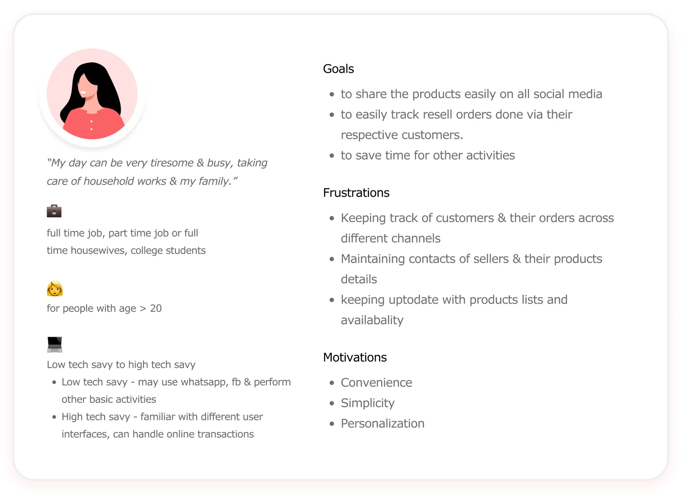
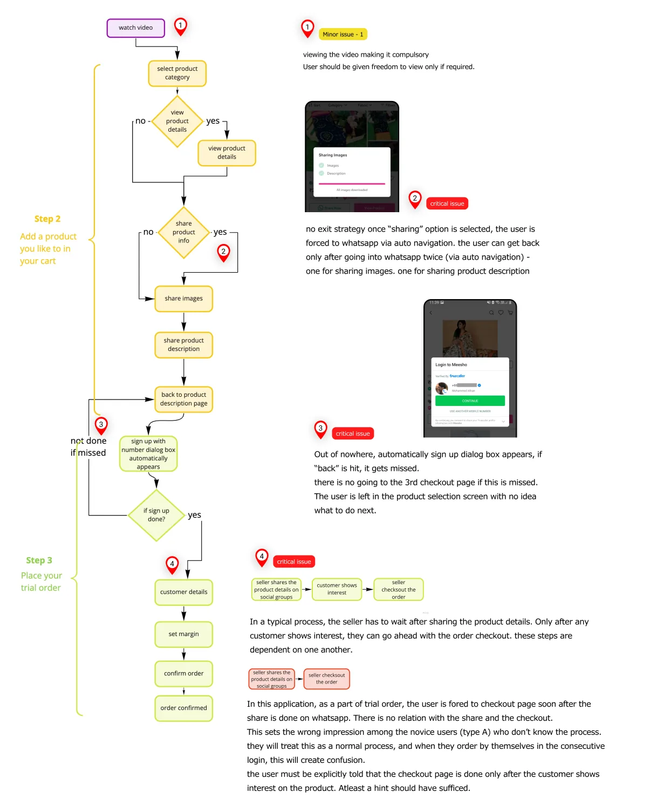
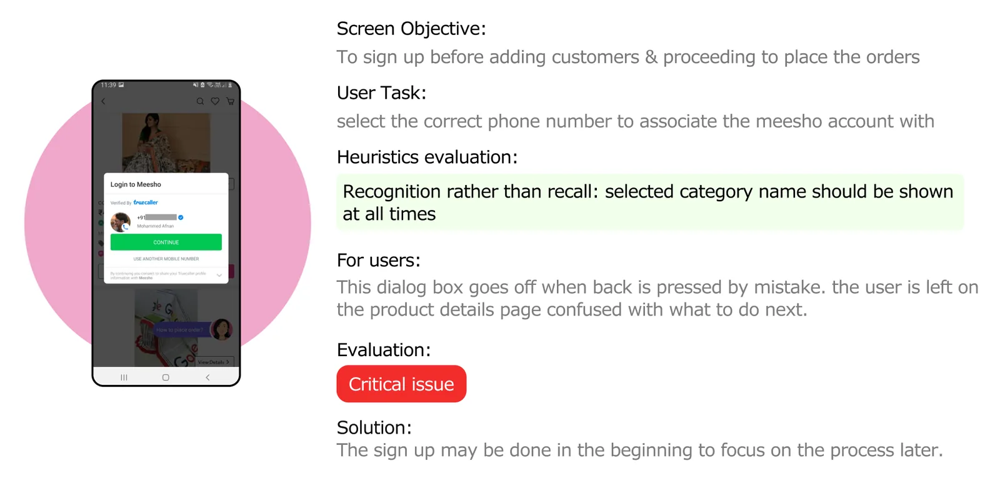

01 — The problem
A new seller's first order quietly decides if they stay.
A person's first experience with a product decides whether they trust it enough to stay, refer it, or try again.
Meesho is a reselling platform for clothing and accessories. Anyone can sign up, pick a product, share it on WhatsApp or social media, and earn a margin if a customer buys through them.
The brief was open: pick any one flow on the platform and justify the pick. I chose onboarding through a seller's first order, for the reason the brief itself points to. A first hands-on experience decides whether someone trusts a product enough to stay, refers it to others, or tries another product from the same company. Get that first order wrong, and none of those three happen.

The reasoning I used to justify the pick, taken straight from the audit.
Who I audited for
Most Meesho resellers are housewives and young women, running their first business of any kind, on the side of a job or their studies. Tech comfort on the app ranges wide: some only know WhatsApp and Facebook, others already handle online payments without help.

The persona behind the audit: goals, frustrations, and motivations, as defined going in.
Three goals kept coming up: share products easily, keep track of orders across customers, save time for everything else in her day.
Her biggest frustration was already named before I even opened the app: keeping track of customers and orders across different channels. I audited every screen against usability heuristics looking for exactly where the flow would help or hurt those three goals, for two user types.
Type A has never resold anything and only knows the app pays out. Type B has a rough idea of the process already and expects the app to match it.
02 — What I found
Five screens got it right. Three broke the process for a first-timer.
The gender picker uses icons over text and gives a clear exit. The step-complete screens show the user exactly where they are. Payment offers cash on delivery for novice users alongside flexible online options. Address fields validate as you type, so a wrong pincode gets caught immediately. The order summary is editable and shows status clearly. Five screens passed clean.
Against that, the app hands the user to WhatsApp mid-flow and doesn't always let them come back.

The audited flow, issues marked at the points they occur.
No way back from WhatsApp
Tap share, and the app auto-navigates to WhatsApp twice: once for the photo, once for the description, with no cancel option. Hit back by mistake, and it sends you to WhatsApp again to finish the share it thinks you abandoned. This is the reseller's first goal, share products easily, working against her instead of for her.

The share sequence: two forced hand-offs to WhatsApp, no cancel option.
A sign-up prompt that ambushes the user
A phone-number dialog appears out of nowhere mid-flow. Dismiss it by accident, and there's no route forward. The user is stuck on the product-details screen with no idea what to do next. Save time for other things was one of her three goals going in. A dead end mid-flow is the opposite of that.

The sign-up dialog: no warning it's coming, no recovery if it's dismissed.
Checkout before the sale
The app takes the reseller to checkout right after they share a product, with no signal that checkout should wait for a customer to actually reply. A first-timer will treat this as the normal order, not a placeholder step, and get confused the next time they log in and order for themselves. This is her named frustration exactly: keeping track of customers and orders across channels. Checkout with no link to which customer or which channel makes that harder from the very first order, not easier.
03 — The proposal
I mapped the real-world seller's process first, then rebuilt the app flow around it.
Sellers already carry a three-step mental model in from the offline world. I built the app to match it, instead of the other way round.
The real-world version runs six steps: check product availability, share it, wait for a customer's interest, collect their details, get paid, place the order. I mapped that down to the three steps that actually matter for a first-time user: select and share the product, wait for interest, place the order with margin. Once delivered, the profit lands in the reseller's account.

The real-world process, mapped onto the app's three-step backbone.
That three-step shape becomes the backbone of the whole redesign:
- Sign-up moves to before the process starts, phone number only, so it never interrupts mid-flow again.
- The onboarding video stays, but becomes optional instead of forced, since Type B users already know the basics. A stepper shows first-timers where they are across the three steps.
- Sharing gets equal treatment across WhatsApp, Instagram, and Facebook: one dropdown to choose the channel, instead of separate CTAs that force a decision too early. The auto-navigation is gone, replaced with an explicit, cancellable share action.
- Once a product's been shared, it's filtered into its own list, so when a customer responds, the reseller can find it and place the order without hunting.
- Customers and orders can be tagged by the channel they came in on, so as a reseller's customer list grows, they can filter and prioritize who to follow up with.

The proposed flow: three labeled steps, sign-up moved to the start, no forced hand-offs.
The three critical issues from section 02 are each addressed directly in this proposal. None of this is measured. It's a hackathon proposal, not a shipped result.
04 — How it compares
Same three steps, none of the ambushes.
This was my hackathon entry and personal proposal, judged against other entries over one weekend. I have no evidence Meesho adopted any of it. What follows is the current flow set against what I proposed to fix it.
05 — What I'd do differently
Untested assumptions about drop-off.
I never tested the proposed flow with an actual reseller.
I'd run it past two or three real Type A and Type B users before finalizing the structure. I assumed moving sign-up to the very start doesn't hurt drop-off. I'd want to check that, not assume it.